The visual direction is right. The trust grammar is right. Two surfaces and three components are still drafted, not finished.
Eight routes implemented and reviewed against the design brief: NPI-first hero, paper-substrate aesthetic, eight-state trust vocabulary, institution review boundary, source attribution, connector matrix, passwordless auth with disclosure. Premium and calm. Two routes (Receipt Drawer, Evidence Packet) are not yet present as surfaces; one (Audit Timeline) is partially rendered; one (Connector Health Matrix) needs a grid variant beside the table.
LIMITED PASS
The design system holds. The paper substrate, ink, hairline, single accent, and eight-state truth grammar are consistently applied across all built routes. Hierarchy is calm, monospace metadata is used appropriately, and the institution review boundary is visible on every relevant surface. Three classes of work remain before this is unconditional PASS:
- Component completeness — four primitives from the brief (Receipt Drawer, Audit Timeline, Connector Health Matrix as grid, Evidence Packet Preview) are spec'd or partially rendered but not yet finished surfaces.
- Responsive polish — between 980px and 1180px the nav-status pill crowds the auth buttons and a few labels wrap inside chips/tabs. Strict 1240+ enterprise width is clean.
- Interaction states — hover and focus are wired; loading, degraded-source, and auth-required states need explicit rendering so the engineering handoff is unambiguous.
What the implementation got right.
Six things that earn the "state-of-the-art" descriptor and that the team should not regress on.
The Truth Chip — two-segment, never bare.
Every state chip pairs an ink state ("SOURCE-BACKED") with its source and timestamp ("ABMS · 14d") inside one capsule, separated by a hairline rule. This is the single most important visual decision in the system — no fact ever floats without its citation.
Paper substrate, ink content, hairline structure.
Warm off-white substrate, near-black ink, 1px hairlines instead of cards-within-cards. The product reads like an issued document on every route — sign-in, passport, status, trust register all share the same visual vocabulary at the pixel level.
The eight trust states are mutually distinct.
Source-backed (cool green), Pending (warm amber), Source unavailable (neutral gray), Self-reported (cool blue), Institution must review (ink-indigo, the accent), Sanction (dampened red), Sources disagree (purple), Not asserted (dashed). Each is recognizable from across the room.
The institution review boundary is loud without being alarming.
An accent-washed banner on every passport, a dedicated step on the proof rail labeled "REVIEW BOUNDARY", a literal block in the right rail listing what institutions must read themselves. Calm, persistent, impossible to miss.
Sign-in / sign-up explains the why before the form.
The left panel of both auth pages is a disclosure stack — why sign-in matters, what it isn't, how authentication works — rather than a marketing hero. Restraint with substance.
The /status connector matrix is genuinely enterprise-grade.
Tabular layout with per-source truth chips, 24h sparkline, median latency, last-error column, per-row action. Reads like a Stripe API status page. The SAM.gov degraded row (503 · 02h · Force retry) demonstrates how degraded states render without blaming anyone.
What's missing or unfinished.
Six gaps between the brief and what's shipped — none break the system, all should land before this is unconditional PASS.
No Receipt Drawer yet.
Receipts render inline (on the passport aside and on the verdict block of /trust), but there's no slide-in drawer surface for replaying a full receipt with the signed payload, request/response codes, and the raw response trail. The brief lists this as a primary component.
No Evidence Packet Preview.
The /passport CTA "Send to institution" jumps directly to send. The user should first see what fields, what scope, what TTL, and what receipt the recipient will see — as a preview panel before commit.
Audit Timeline is rendered as a list, not a timeline.
The passport's "Source timeline" right-rail is a vertical text list. The brief asks for a true timeline component with scrubable nodes and a now-marker. Functional today, not the spec.
Connector Health Matrix needs a grid variant.
/status renders the matrix as a tall table — excellent for detail. The brief also wants a compact source-by-state grid (rows = sources, cols = states / freshness buckets) for at-a-glance reading on the home page nav-status pill.
Role doors don't open into role-specific screens yet.
The three doors on / point at the same passport URL with different query params. They should open into three distinct surfaces: clinician (add self-report), institution reviewer (with reconcile + attest controls disabled until evidence ready), operator (status dashboard). Sign-up has a role selector but no role-specific second step.
No designed loading or auth-required states.
The system never spins. But when a passport is being read for the first time, or when a route requires sign-in, the user needs a calm rendered state — not a flash of empty page. These are not yet drawn.
Eight routes · rendered & reviewed.
Each screen below pairs a live capture with its specific wins, gaps, and required fixes.
Landing · NPI-first hero · role doors · passport preview · eight states
PASS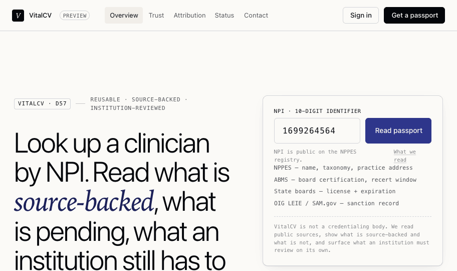
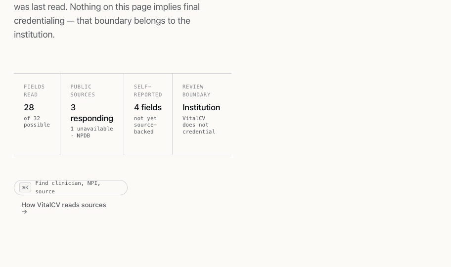
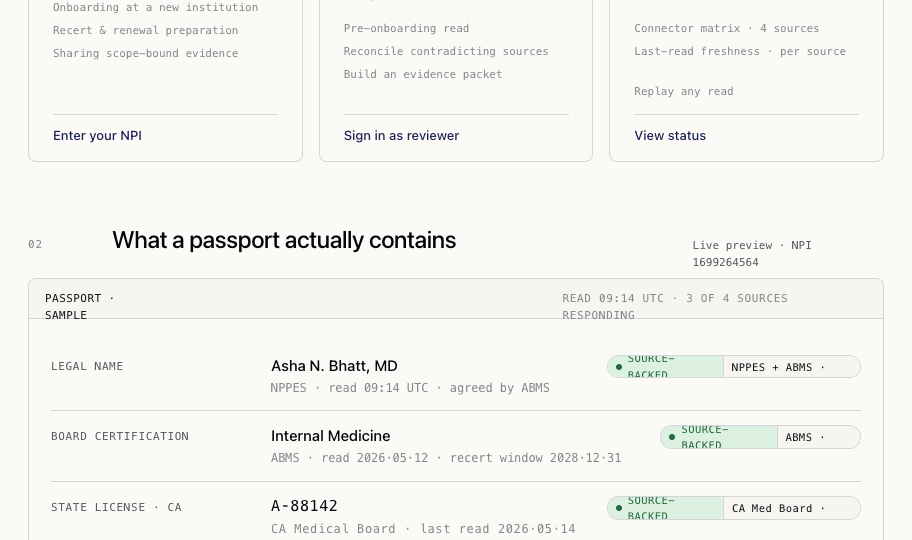
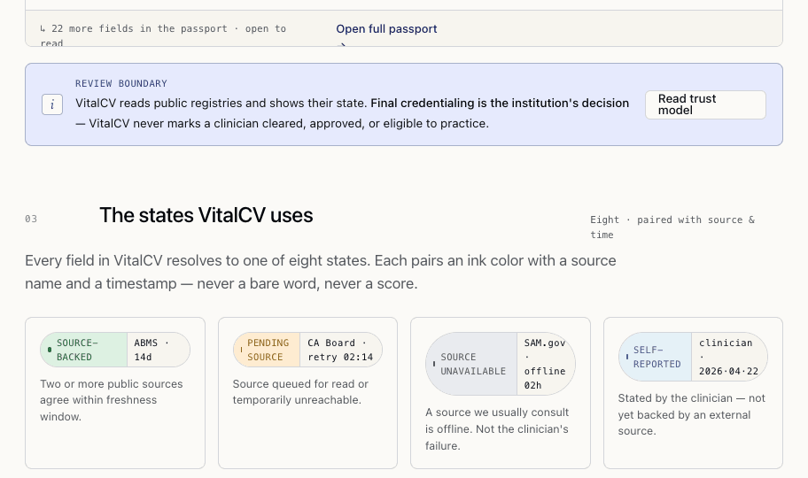
Wins
- NPI input is the unmistakable primary affordance — large mono input, accent CTA, eyebrow label "NPI · NPPES PUBLIC REGISTRY" floating off the card edge.
- The display headline uses Fraunces italic for "source-backed" — a single emotional accent in an otherwise restrained page.
- Role doors are three columns at desktop with role label, name, plain-prose description, three use cases as mono bullets, accent CTA below a hairline.
- Passport preview shows real Truth Chips with real sources — the user understands the product before clicking anything.
- Eight-state grid at the bottom is a designed glossary, not buried documentation.
Gaps
- The four "proofs" tiles (Fields read · Public sources · Self-reported · Review boundary) repeat data shown two scrolls down. Either lift them above the hero or remove.
- Role doors all point at the same passport URL — should differ.
Required fixes
- Tighten nav-status pill so it doesn't crowd auth buttons between 980–1180px.
- Resolve role doors to three distinct surfaces.
Passport · header · proof rail · field rows · review boundary · receipt
PASS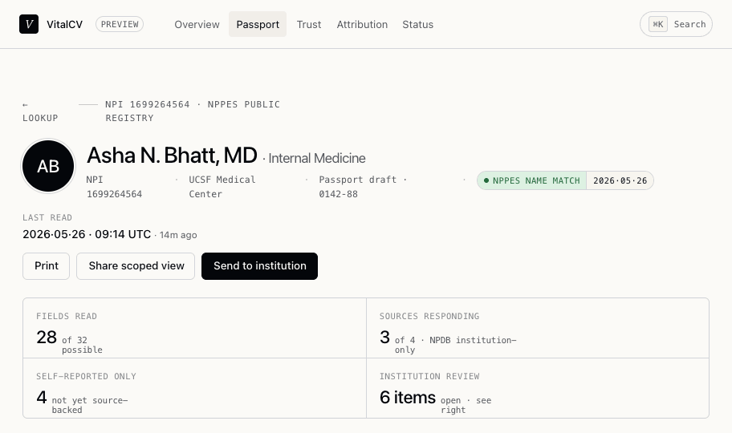
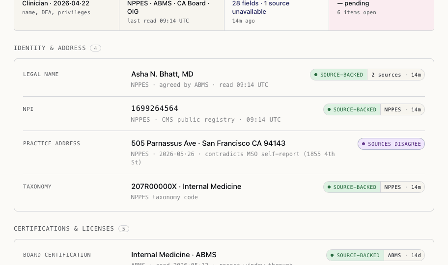
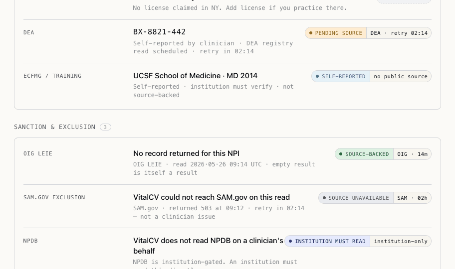
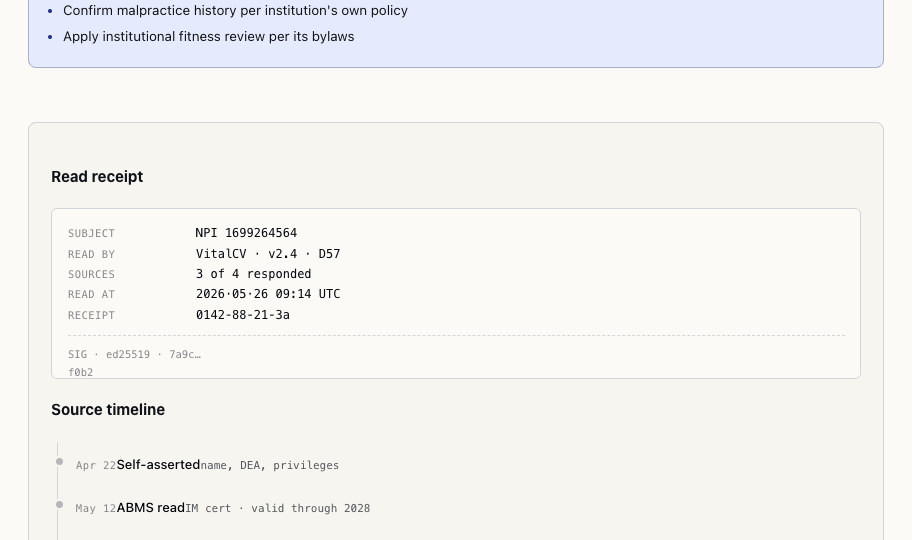
Wins
- Header reads like a printed page: name, mono NPI, last-read timestamp, three actions (Print, Share scoped view, Send to institution) where Send is the only primary.
- The Proof Continuity Rail (Self-asserted → Public sources → Reconciled → Institution review) sits below the header with the current step accented and the institution-review step explicitly tagged "REVIEW BOUNDARY".
- Field rows are atomic: monospace label, sans value, monospace source line, trailing two-segment Truth Chip. Sources disagree chip surfaces real contradiction on the practice-address row.
- Sanction & exclusion block is honest — OIG returns no record (literal), SAM.gov is unavailable (system-side calm), NPDB is institution-only (boundary visible).
- The right-aside Receipt panel reads as a printable document with subject, sources, time, ed25519 signature.
Gaps
- Source timeline in right rail is a text list — should be a true Audit Timeline component with dots, lines, and a now-marker.
- "Send to institution" jumps directly — needs an Evidence Packet Preview drawer between intent and commit.
- No degraded-source banner at top when SAM.gov is offline; only the affected field row says so. Add a slim banner.
Required fixes
- Replace Source Timeline list with a real Audit Timeline component.
- Add Evidence Packet Preview drawer behind the Send CTA.
Sign in · split-panel · disclosure left · passwordless right
PASS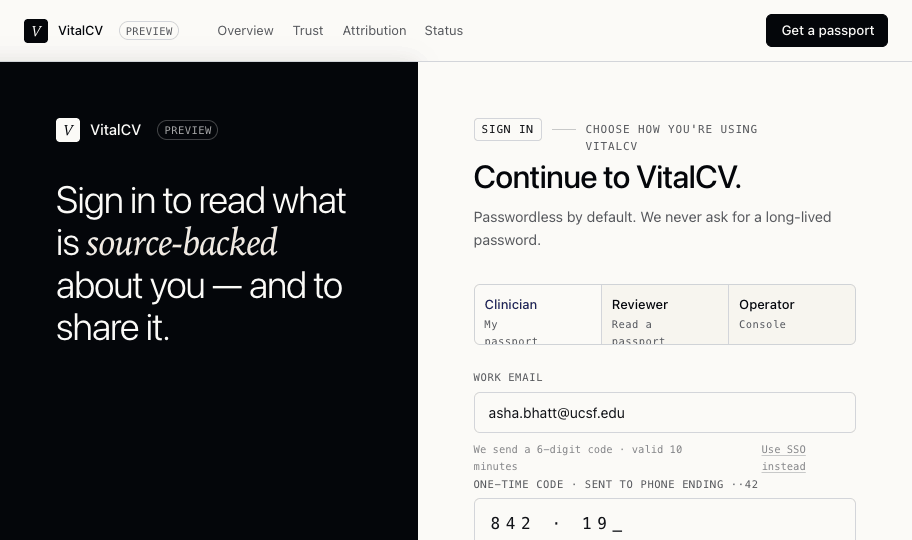
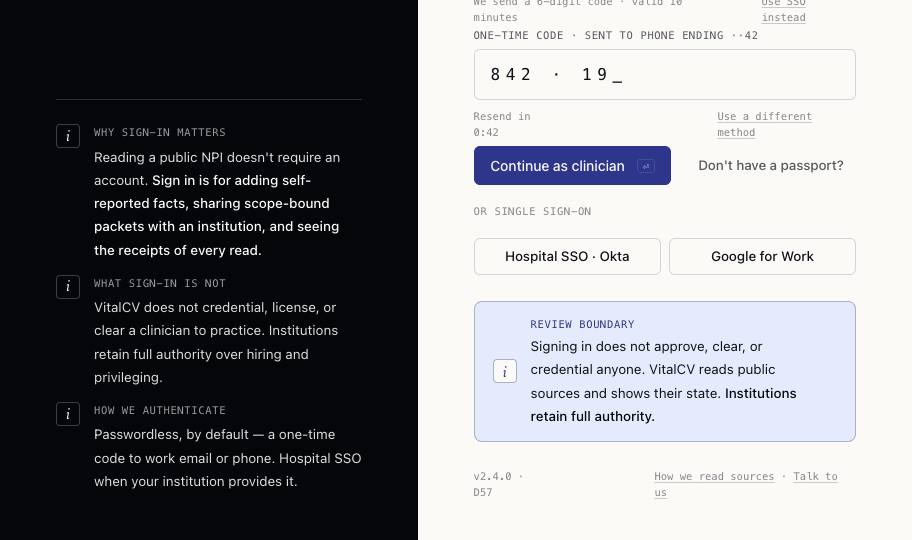
Wins
- Black left panel with Fraunces italic accent ("source-backed") and three plain-language disclosures: why sign in matters, what it is not, how authentication works.
- Role-aware segmented control selects Clinician/Reviewer/Operator before login — the role door extends into auth.
- Passwordless OTP code is shown mono with tracked letter-spacing — feels like a receipt, not a password field.
- Review-boundary banner is repeated in the right form, just above the submit — the user can't sign in without seeing it.
Gaps
- Role tabs ("My passport") wrap to two lines at narrow viewport — labels should stay single-line.
- No "code sent · waiting" state rendered between email and OTP — the form jumps both fields at once.
Required fixes
- Single-line role tab labels.
- Render a sent-OTP confirmation state.
Sign up · "Three things a passport gives you. Nothing it claims about you."
PASS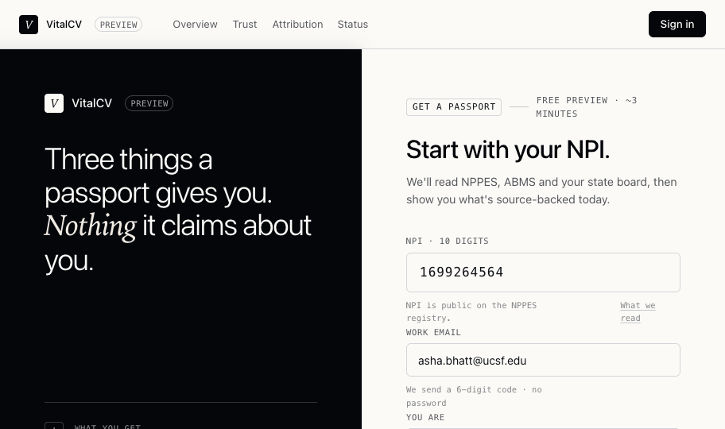
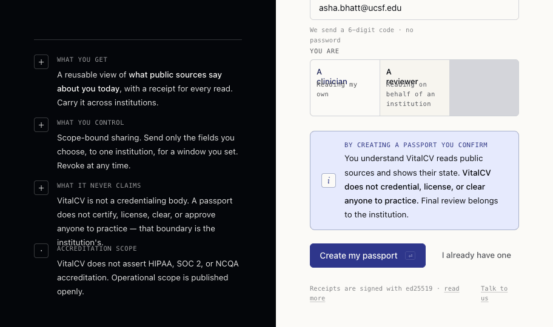
Wins
- Headline does the disclosure work in two sentences: what a passport gives you, what it never claims. No marketing tone.
- Four-row Auth Disclosure Card: what you get, what you control, what it never claims, accreditation scope (explicit "no HIPAA / SOC 2 / NCQA" line).
- NPI is the first field — same affordance as the landing hero. Continuity.
- By-creating-this-passport confirmation block before submit, with the boundary banner inline.
Gaps
- No second-step preview ("This is what your passport will look like in 60s") before commit.
- "You are" segment has only two options — clinician / reviewer — but the role door triad on / lists three. Reconcile.
Required fixes
- Add Operator door OR remove the third door on / to match.
Trust register · what VitalCV reads · what it doesn't · who reviews
PASS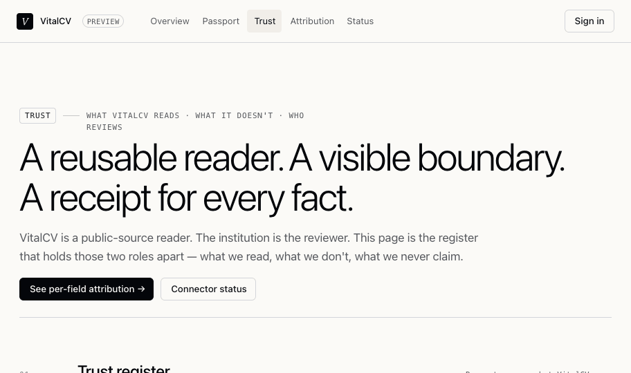
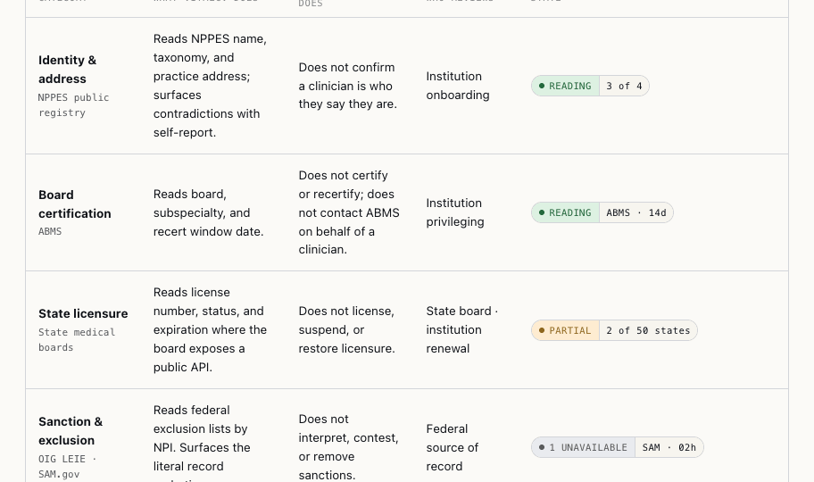
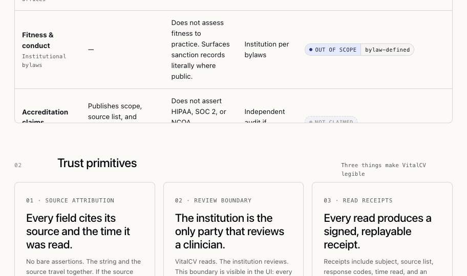
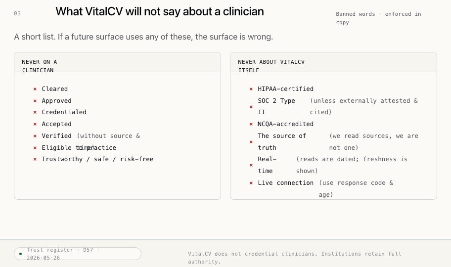
Wins
- Display headline declares the architecture in one line: "A reusable reader. A visible boundary. A receipt for every fact."
- Trust register table has the bravest column in the product: "What it never does" — adjacent to "What VitalCV does", per category.
- Three trust primitives below (Source attribution · Review boundary · Read receipts) render the corresponding component live.
- Explicit banned-words section in two columns: never-on-a-clinician (Cleared, Approved, Verified-bare, Eligible to practice…) and never-about-VitalCV (HIPAA-certified, SOC 2 Type II, NCQA-accredited, real-time…).
Gaps
- No anchor links from the register table rows to the matching /trust/attribution sections — should be clickable cross-references.
Required fixes
- Wire register-row category names as cross-links to attribution.
Source attribution · per source · what we read · what we don't
PASS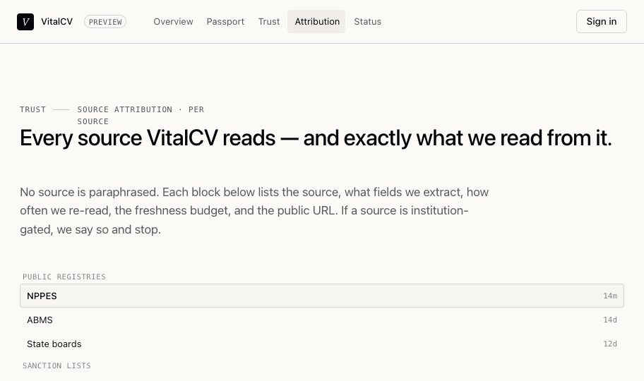
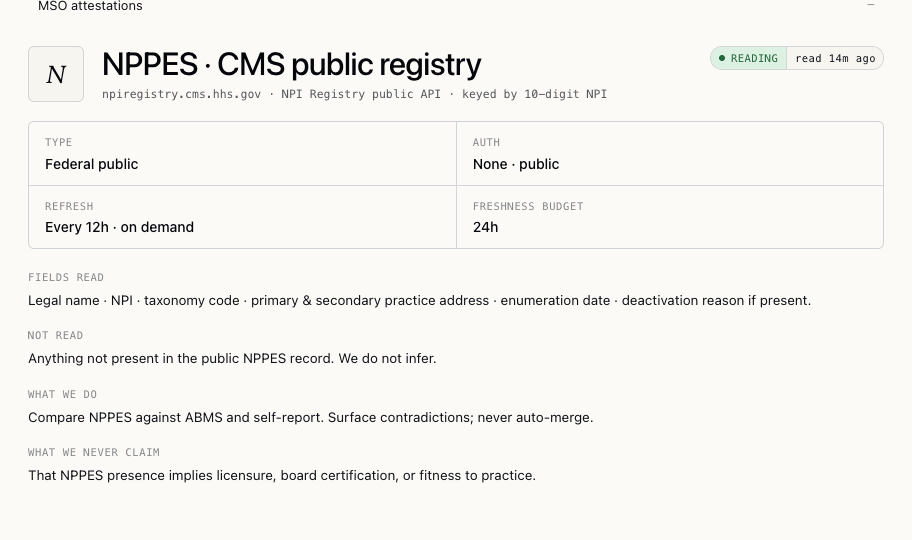
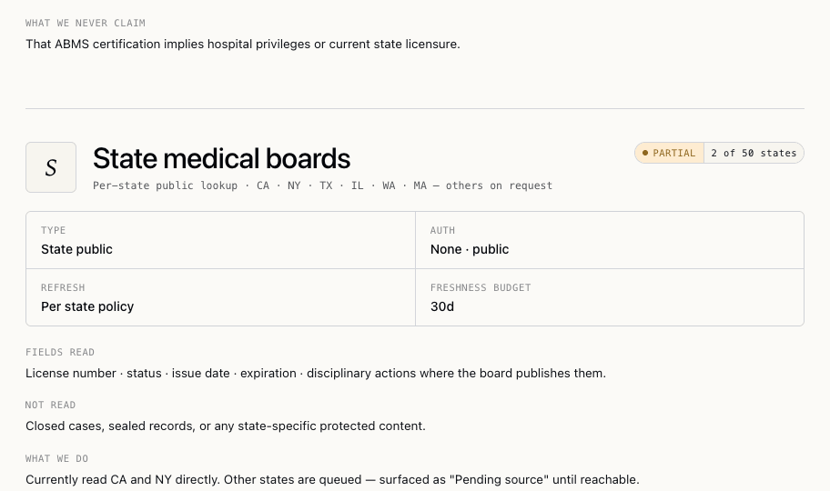
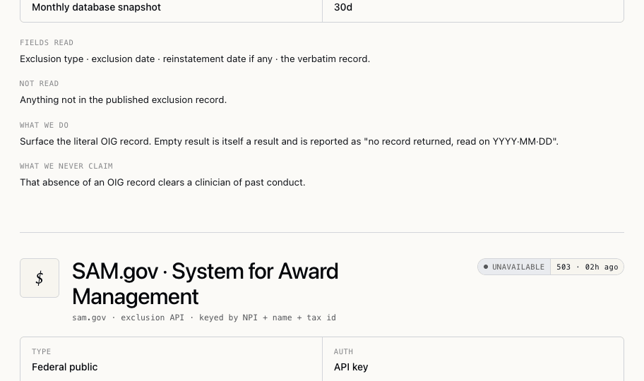
Wins
- Per source: logo + name + URL + truth chip (state + last read), 2×2 grid of Type/Auth/Refresh/Freshness, then dl-list of Fields read / Not read / What we do / What we never claim.
- NPDB block is treated as a deliberate exception — accent-washed callout, "we do not read this" stated literally, with the institution-must-read attribution chip.
- SAM.gov block surfaces current 503 status inline — the attribution page itself is honest about live source health.
Gaps
- Left nav rail loses its sticky positioning at narrow viewport and collapses to a flat list — fine, but a single sticky table-of-contents row at the top would help scrolling.
Required fixes
- Add a sticky thin TOC bar that activates below 1100px width.
Status · connector matrix · read history · operational scope
PASS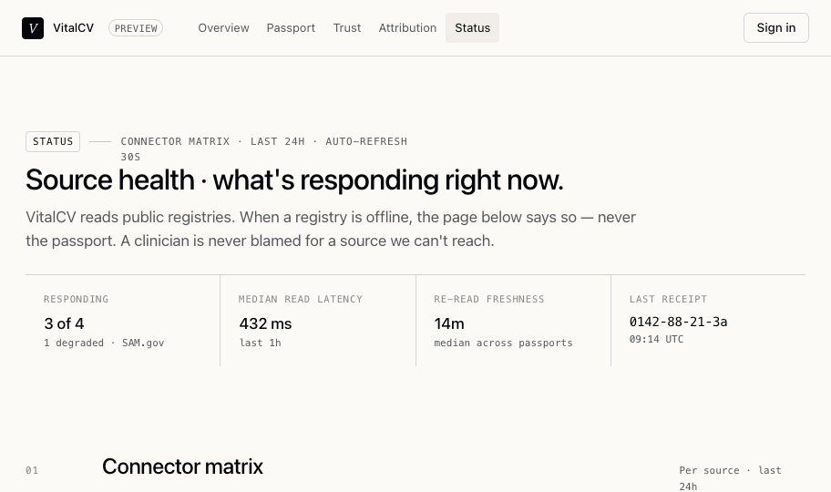
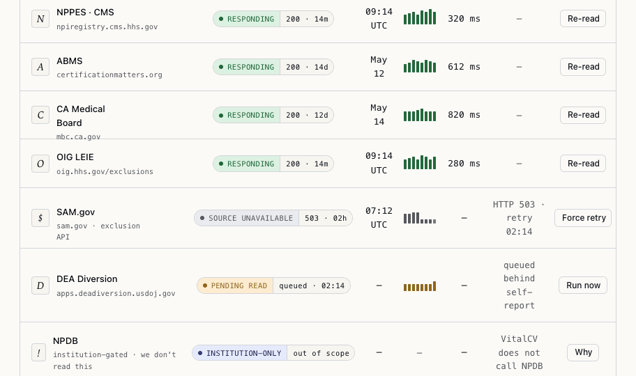
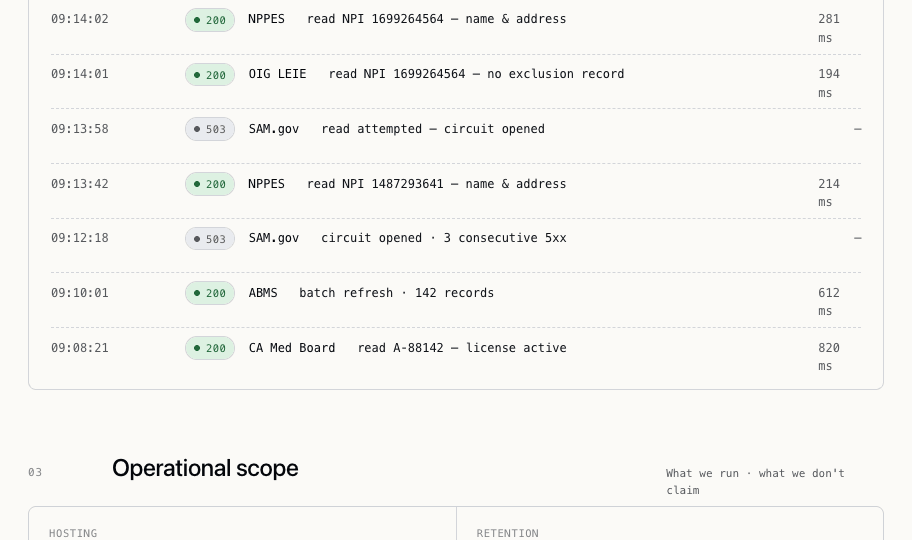
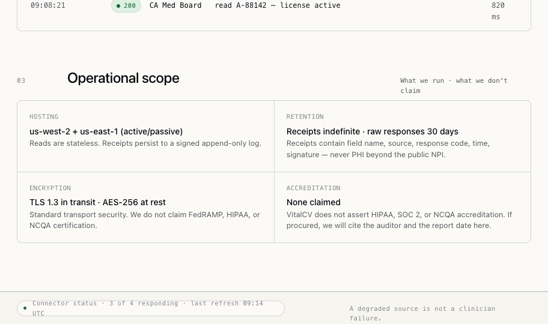
Wins
- Sparkline-per-row, median latency, last-error column. SAM.gov degraded row shows diminishing sparkline ending in a stub — calm, legible degraded state.
- Read history log uses mono throughout: timestamp, response chip, source, action, latency. Reads like a tail of a healthy production log.
- Operational scope card explicitly states "None claimed" for HIPAA / SOC 2 / NCQA — and reserves space for citation if procured.
- A "Reading note" banner under the matrix repeats the system-side calm principle: source 503 ≠ clinician failure.
Gaps
- No compact at-a-glance Connector Health Matrix grid variant — only the deep table.
- No real-time refresh indicator — the "auto-refresh 30s" claim has no visible heartbeat.
Required fixes
- Add compact grid variant of the matrix above the table.
- Add a quiet auto-refresh tick (no animation; mono countdown).
Global chrome · cross-route consistency
LIMITED PASS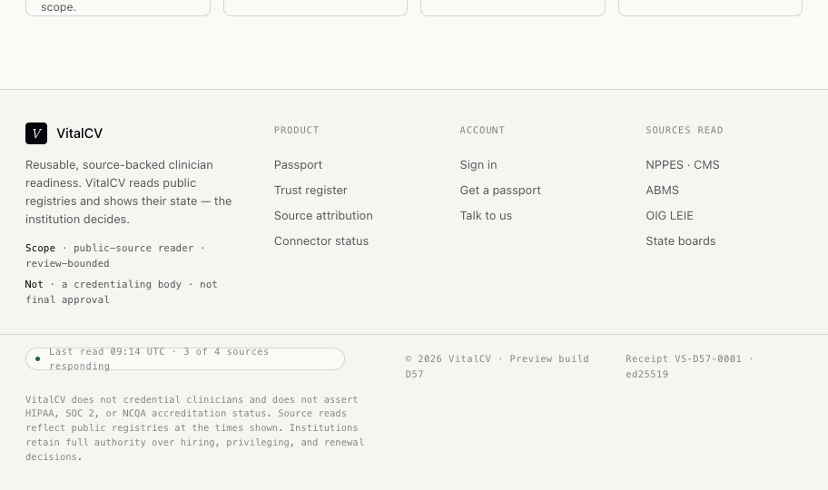
Wins
- Footer carries the brand blob + scope note (public-source reader, review-bounded · not a credentialing body), product/account/sources columns, and a bottom row with current truth-state pill ("3 of 4 sources responding") and Receipt id.
- Disclaimer paragraph at the very bottom states no-HIPAA / no-SOC 2 / no-NCQA outright in mono.
Gaps
- Nav crowds between 980–1180px: nav-status pill, two buttons, and nav links all compete for horizontal space.
- No visible cmd palette (⌘K) on most pages — the cmd-pill on /passport implies it's there; needs to render on all routes.
Required fixes
- Tighten nav at intermediate widths; collapse nav-status to a single dot indicator that expands on hover.
- Make ⌘K palette globally available; render cmd-pill in nav on every route.
Fourteen components in the brief · ten shipped.
Per-component status with notes on what's right and what's missing.
| Component | Status | Notes |
|---|---|---|
| NPI Lookup Herolanding + sign-up | Shipped | Floating "NPI · NPPES public registry" label, mono input, accent CTA, mono hint list of fields we read, disclaimer below dashed rule. Used twice with consistent treatment. |
| Role Door Cardlanding | Shipped | Three cards: serif-italic letter icon, mono role label, sans name, plain description, three use-case bullets, accented CTA with arrow on a hairline. Should resolve to distinct surfaces. |
| Passport Headerpassport top | Shipped | 64px avatar, name + specialty, mono NPI / institution / passport-draft id, last-read tile + action row (Print · Share scoped view · Send to institution). Four-tile summary band below. |
| Truth-State Chipeverywhere | Shipped | Two-segment compound: state + source/timestamp. Eight variants (source-backed, pending-source, source-unavailable, self-reported, review-needed, sanction, contradicted, not-asserted). Never bare. |
| Source Rowpassport aside + attribution sticky | Shipped | Serif-italic letter icon, source name + sub-line, status chip, age. Used in passport right rail and attribution left nav. |
| Connector Matrixstatus | Partial | Deep table variant is excellent. Needs a compact grid variant (rows = sources, cols = state buckets) for at-a-glance use on landing & in nav. |
| Proof Continuity Railpassport | Shipped | Four-step rail: Self-asserted → Public sources → Reconciled → Institution review. Current step accent-topped; last step labeled "REVIEW BOUNDARY". |
| Institution Review Panelpassport | Shipped | Accent-washed block listing items the institution must read or attest. Bulleted, not checkboxed (VitalCV never marks complete). |
| Auth Disclosure Cardsign-in + sign-up | Shipped | Left-panel stacked disclosures with icon + key + value. Three to four entries per page, each one mono caption + sans body. |
| Trust Register Tabletrust | Shipped | Five-column table with what-we-do / what-we-never-do adjacency. Each row carries its own state chip. |
| Status Matrixstatus | Shipped | Per-source rows with sparkline, last-read, latency, last-error, action button. See gap on compact grid variant above. |
| Receipt Drawerbrief | Not shipped | Inline Receipt component is shipped, but the slide-in drawer surface for replaying a full receipt with response trail is not. Brief requires. |
| Audit Timelinebrief | Partial | Rendered as a vertical text list on the passport right rail. Brief asks for a proper timeline with dots, lines, now-marker, and (eventually) scrub. |
| Footer Trust Roweverywhere | Shipped | Per-route truth-row pill ("3 of 4 sources responding · 09:14 UTC") + receipt id + disclaimer paragraph. Persistent and consistent. |
Motion is restrained on purpose. A few states still need to be drawn.
Hover lifts the hairline, not a shadow.
Buttons, doors, table rows, and source rows all transition border-color and background-warm on hover at 120ms ease — no shadow blooms, no card jumps. This is the right call.
Focus reveals the accent wash.
Inputs show a 4px outer ring at oklch(94% .025 274) on focus — a quiet halo, the only place the indigo accent appears outside of primary CTAs.
Loading is not drawn.
No spinners (correct), but no skeleton or read-in-progress surface either. The passport should show a calm "Reading sources…" state on first load with progressive Truth Chips populating as each source returns.
Auth-required state is not drawn.
When a deep link to /passport requires sign-in, the page should not redirect — it should render the read-only public view with an inline sign-in prompt over the protected fields. Not yet built.
Degraded-source needs a slim banner.
Today the affected row says "Source unavailable" but the page header is silent. A slim hairline-bordered banner ("SAM.gov offline · 02h · 1 field affected") should sit just under the proof rail when any required source is down.
Source-backed state reads at a glance.
Cool green ink + cool green wash + green dot + mono source + age. Across all eight states the differentiation is high enough that a reviewer can scan a 30-row table in under five seconds.
Mobile is functional but not yet designed.
The current implementation collapses to single column below 860px and is readable. It is not yet optimized — and for an enterprise tool used primarily on desktop, that's defensible for v1. A short list of mobile-specific decisions to make before any mobile rollout:
Field rows collapse to one column — Truth Chip ends up below the value.
At <860px the 200px label + value + meta grid stacks. The Truth Chip lands beneath its own value, which is OK, but the source line above it duplicates the chip's content. Pick one.
Proof Continuity Rail wraps to 2×2 on mobile, loses linear motion.
Acceptable; not great. A horizontal-scroll variant (with a 1px hairline guide) would preserve the metaphor.
Nav links hide entirely on mobile; no hamburger.
Brand + Sign-in button only at <860px. Add a slide-down menu sheet (paper substrate, hairline borders) — not a dropdown.
Status connector matrix has horizontal overflow on mobile.
7-column table is unscaled. Either accept horizontal scroll with a sticky first column, or render the compact grid variant (gap G·04 above) on mobile.
What will degrade the system if left unattended.
Accent creep.
Today ink-indigo accent is used only for primary CTAs and the review boundary. The day a future PR introduces an accent-colored chart, an accent-colored chip, or an accent-tinted nav, the system loses its weight. Keep the rule: one accent per screen, used surgically.
Truth Chip dilution.
If anyone ever ships a single-segment chip that says just "VERIFIED", we have lied to the user. The two-segment form (state + source/time) must be enforceable in code — make it impossible to render <TruthChip> without a source prop.
Density drift on dashboards.
The /status table is dense in a calm way. Future "operator" surfaces will tempt the team toward Tailwind-default padding, larger radii, and softer shadows. Lock down spacing tokens; don't allow more than the 4–8–12–16–24–32 scale.
Serif italic overuse.
Fraunces italic is used in three places: hero word ("source-backed"), passport name italic on the passport id chip, source-row icon glyph. If it shows up in body copy or button labels, it stops being an accent.
Receipt block decoration drift.
The diagonal-stripe top border on the Receipt block is the only ornamental flourish in the system. Keep it; don't add more (no seals, no QR codes, no certificates).
Dark mode unplanned.
Earlier wave 5 had dark-mode tokens. The new system is light-only. Decide explicitly: light-only forever, or build a paper-inverse dark mode that keeps the document feel.
Nine items to clear before unconditional PASS.
Priorities are sequenced — F·01 lands first, F·09 lands last. Each maps to a specific surface; no fix touches more than two files.
LIMITED PASS. Ship after the nine required fixes.
The visual system is right: paper substrate, ink, hairline, single accent, eight trust states, every fact paired with its source and time, institution review boundary visible on every relevant surface. None of the banned phrases appear. No source is paraphrased. No clinician is blamed for a source outage. The /status connector matrix and the /passport proof rail are state-of-the-art on their own.
What remains is component completeness — Receipt Drawer, Evidence Packet Preview, real Audit Timeline, compact Connector Health Matrix — plus three interaction states (loading, auth-required, degraded banner) and a small responsive pass. None of it requires rethinking the system; all of it composes from the primitives already in tokens. Build in the order on §9. Hold the line on §08. Do not invent a second accent.